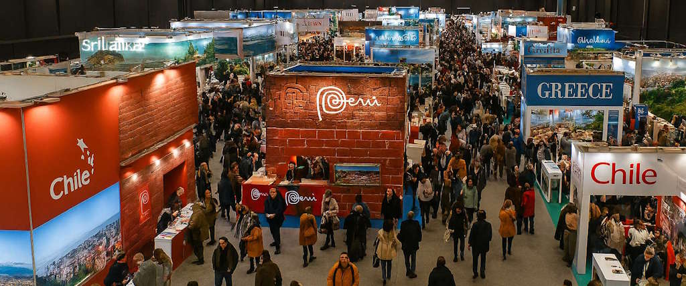

Bienvenidos a BIRTLH ExpoViajes 2025

La feria BIRTLH ExpoViajes 2025 se consolida como el evento de referencia en el sector turístico del norte de España. Durante una jornada completa, profesionales del turismo, agencias de viajes y viajeros se darán cita en el prestigioso BEC Bilbao Exhibition Centre para descubrir las últimas tendencias en turismo y las mejores ofertas de viaje.
Este año contaremos con más de 150 expositores de diferentes países y regiones, presentando destinos únicos, experiencias inolvidables y las mejores propuestas para todos los tipos de viajeros.
Enlaces de Interés
Para más información sobre turismo y viajes, te recomendamos visitar:
Información Básica del Evento
| Concepto | Detalles |
|---|---|
| Fecha | 18 de octubre de 2025 |
| Horario | 09:00 - 20:00 horas |
| Ubicación | BEC Bilbao Exhibition Centre |
| Dirección | Ronda de Azkue, 1, 48902 Barakaldo, Bizkaia |
| Entrada | Gratuita con registro previo |